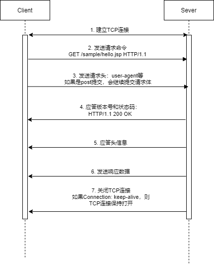
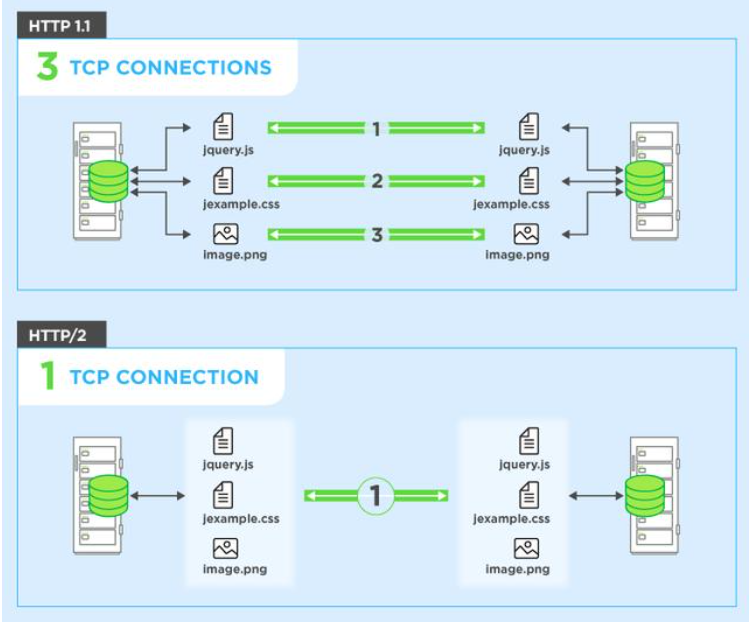
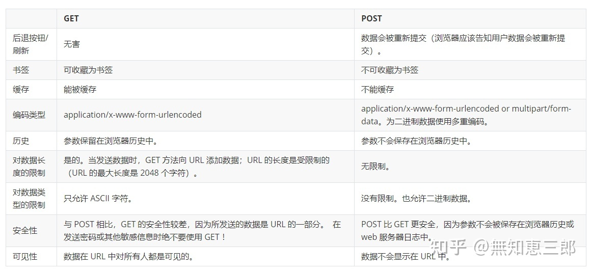

作为复习，也作为一个目录
说一下HTTP协议
HTTP全称是Hyper Text Transfer Protocol。即超文本传输协议，它是以TCP/IP为基础来传输HTML，文件，图片等。 它本身处于应用层，端口号80。
- HTTP是基于浏览器/服务器架构；
- HTTP是无状态协议：HTTP本身并不保存用户的任何信息，也不会对传输的数据，状态信息进行持久化；
- HTTP是无连接协议：每次连接只处理一个请求，服务器处理完用户请求，即断开连接，借此节约传输时间。
HTTP通信过程
- 用户输入网址
- DNS服务器解析域名
- 浏览器和服务器建立TCP连接
- 浏览器向服务器发送请求行
- 浏览器向服务器发送请求头，并以空行代表发送结束，如果请求类型为
post，则继续发送请求体 - 服务器应答协议版本号和应答状态码
- 服务器发送响应头，并以空行代表发送结束
- 服务器发送数据：以
Content-Type给出的格式发送用户所请求的信息 - 服务器关闭TCP连接：如果浏览器或者服务器的头信息中加入了这样一段代码：
connection：Keep-alive则TCP连接会保持打开状态 - 客户端浏览器解析HTML内容
下图整理了HTTP通信的关键步骤：

说一下HTTPS协议
可以看我的博客：《HTTPS协议》
HTTP与HTTPS的对比
- 两者工作的端口号不同：HTTP工作在80，HTTPS工作在443；
- HTTPS需要用到CA（数字证书认证机构）申请证书，一般需要一定费用；
- HTTP响应比HTTPS快，主要因为HTTPS除了TCP3次握手外还要加上SSL9次握手共12次握手；
- HTTPS是构建在SSL/TLS上的HTTP协议，因此需要占用服务器资源。
HTTP缓存
http缓存指的是: 当客户端向服务器请求资源时，会先抵达浏览器缓存，如果浏览器有“要请求资源”的副本，就可以直接从浏览器缓存中提取而不是从原始服务器中提取这个资源。
常见的http缓存只能缓存get请求响应的资源，对于其他类型的响应则无能为力，所以后续说的请求缓存都是指GET请求。
http缓存都是从第二次请求开始的。第一次请求资源时，服务器返回资源，并在respone header头中回传资源的缓存参数；第二次请求时，浏览器判断这些请求参数，命中强缓存就直接200，否则就把请求参数加到request header头中传给服务器，看是否命中协商缓存，命中则返回304，否则服务器会返回新的资源。（可以画个图理解一下）
HTTP 缓存又分为强缓存和 协商缓存 ：
强制缓存：在缓存数据未失效的情况下（即Cache-Control的max-age没有过期或者Expires的缓存时间没有过期），那么就会直接使用浏览器的缓存数据，不会再向服务器发送任何请求。
协商缓存：当第一次请求时服务器返回的响应头中没有Cache-Control和Expires或者Cache-Control和Expires过期还或者它的属性设置为no-cache时(即不走强缓存)，那么浏览器第二次请求时就会与服务器进行 协商，与服务器端对比判断资源是否进行了修改更新。如果服务器端的资源没有修改，那么就会返回304状态码，告诉浏览器可以使用缓存中的数据，这样就减少了服务器的数据传输压力。如果数据有更新就会返回200状态码，服务器就会返回更新后的资源并且将缓存信息一起返回。
HTTP状态码
- 1xx：目前是协议的中间状态，还需要后续请求。
- 101 切换请求协议，从 HTTP 切换到 WebSocket
- 2xx：表示请求成功。
- 200 请求成功，有响应体
3xx：表示重定向状态，需要重新请求。
- 301 永久重定向：会缓存
- 302 临时重定向：不会缓存
- 304 协商缓存命中
4xx：请求报文错误。
- 403 服务器禁止访问
- 404 资源未找到
- 400 请求错误
5xx：服务器错误。
- 500 服务器端错误
- 503 服务器繁忙
一个典型的HTTP请求报文包括哪些部分？响应报文呢？
一个HTTP请求报文包括： 请求头，请求行，空行，请求体。
一个响应报文包括： 响应行，响应头，空行，响应体 。
具体参考我的博客《详解HTTP协议》
HTTP1.0、HTTP1.1、HTTP2.0区别
HTTP1.0和HTTP1.1的区别/长短连接的区别
这里主要回答长短连接的区别就行吧。。
在HTTP/1.0中采用短连接。客户端和服务器每进行一次HTTP操作，就建立一次连接，任务中断连接；Connection: close
在HTTP/1.1默认采用长连接和请求的流水线（Pipelining）处理，在一个TCP连接上可以传送多个HTTP请求和响应，减少了建立和关闭连接的消耗和延迟。Connection: keep-alive，就是保持连接。
长连接适用的场景：长连接适用于操作频繁/点对点通讯等连接数不太多的情况，如：一些游戏/即时通讯场景应该使用长连接；
短连接适用的场景： 短连接适用于大量连接的场景，如Web【wapWeb/H5等】的http服务，长连接对于服务端来说会耗费一定资源。
补充其他区别：
- 长短连接
- 缓存处理：在HTTP1.0中主要使用header里的If-Modified-Since,Expires来做为缓存判断的标准，HTTP1.1则引入了更多的缓存控制策略，可供选择的缓存头来控制缓存策略。
- 带宽优化及网络连接的使用：HTTP1.0中，存在一些浪费带宽的现象，例如客户端只是需要某个对象的一部分，而服务器却将整个对象送过来了，并且不支持断点续传功能，HTTP1.1则在请求头引入了range头域，它允许只请求资源的某个部分，即返回码是206（Partial Content），这样就方便了开发者自由的选择以便于充分利用带宽和连接。
- 错误通知的管理：在HTTP1.1中新增了24个错误状态响应码，如409（Conflict）表示请求的资源与资源的当前状态发生冲突；410（Gone）表示服务器上的某个资源被永久性的删除。
- Host头处理：在HTTP1.0中认为每台服务器都绑定一个唯一的IP地址，因此，请求消息中的URL并没有传递主机名（hostname）。但随着虚拟主机技术的发展，在一台物理服务器上可以存在多个虚拟主机（Multi-homed Web Servers），并且它们共享一个IP地址。HTTP1.1的请求消息和响应消息都应支持Host头域，且请求消息中如果没有Host头域会报告一个错误（400 Bad Request）。
HTTP1和HTTP2的区别
HTTP2.0是第二代TCP协议。它与HTTP1.1的不同点在于：
- HTTP2采用二进制而非文本格式；此属性减轻了框架的复杂性，并简化了由于包含文本和可选空格的命令而导致混淆的命令的实现。
- HTTP2是 完全多路复用 ，而线端阻塞的——只需一个连接可以实现并行；
- HTTP2使用标头（headers）压缩 ，减小了开销；
- HTTP2让服务器可以将响应主动推送到客户端缓存中。
名词解释：
线端阻塞和多路复用
HTTP/1.x 有个问题叫线端阻塞(head-of-line blocking), 它是指一个连接(connection)一次只提交一个请求的效率比较高, 多了就会变慢。 HTTP/1.1 试过用流水线(pipelining)来解决这个问题, 但是效果并不理想(数据量较大或者速度较慢的响应, 会阻碍排在他后面的请求)。
多路传输(Multiplexing)能很好的解决这些问题, 因为它能同时处理多个消息的请求和响应; 甚至可以在传输过程中将一个消息跟另外一个掺杂在一起。所以客户端只需要一个连接就能加载一个页面。减少额外的往返时间。

主动推送：通俗理解就是客户端请求了html，服务器觉得和其相关的css也会被关联到，于是主动同送其他资源到客户端。
GET、POST区别
具体看我的博客《详解HTTP协议》和《HTTP协议幂等性》
